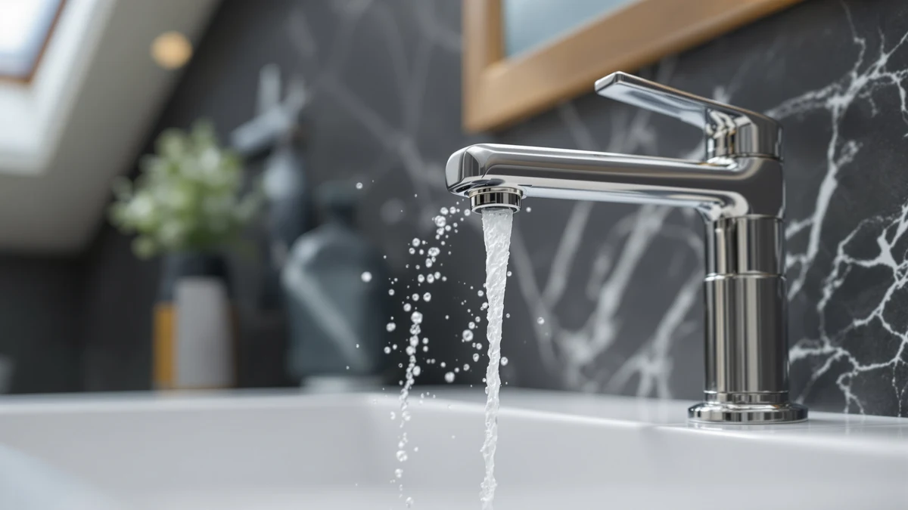

Best Bathroom Faucet Replacement of 2026: 7 Top Picks
Prices and picks verified as of August 2026. Independent, reader-supported reviews.


Quick Answer
For the simplest bathroom faucet replacement upgrade, the DLUCKY Faucet Extender for Sink ($8.99) clips onto a standard spout and pushes the water forward, which fixes the most common complaint we hear: small hands cannot reach the tap. If you want a true new faucet instead of an add-on, the Moen Idora ($54.98) is the safer choice for a standard three-hole sink.
Our pick: DLUCKY Faucet Extender for Sink — $8.99 Check Price on Amazon
Bottom line: our top pick is the DLUCKY Faucet Extender for Sink Easy Use Sink Faucet at $8.99. The best budget option is the Bathfinesse Touchless Bathroom Sink Faucet Commercial at $41.79.
Things to Know Before You Buy
- Extender or full faucet? Three of our picks (DLUCKY, HyabDiop, Yonisun) attach to your current faucet. The other four (Bathfinesse, Moen Idora, Delta Arvo, Moen Ronan) replace it outright.
- Match the spend to the job. Prices here run from $7.58 to $110.60, so a quick reach fix and a full fixture swap sit in different budgets.
- Check your sink holes. The Moen Idora is a 4-inch centerset, which fits the standard three-hole layout most bathroom sinks use.
- Brass bodies last. Every full faucet here uses a brass body, which holds up against corrosion better than the cheapest zinc or plastic internals.
- Touchless needs power. The Bathfinesse runs on a sensor, so plan for batteries or an adapter before you install it.
A bathroom faucet replacement does not always mean ripping out the whole fixture and calling a plumber. Sometimes the fix is a $9 extender that lets your kids reach the water. Other times you want a new brushed-nickel faucet that hides every water spot. We pulled together seven options that cover both ends of that range, from simple clip-on add-ons to full Moen and Delta faucets.
Our pick for most people is the DLUCKY Faucet Extender for Sink at $8.99. It clips onto a standard spout in seconds and redirects the stream forward, which solves the single most common bathroom complaint we hear: small hands cannot reach the tap. If you need a true new faucet rather than an add-on, the Moen Idora at $54.98 is the safer pick for a standard sink.
Prices below run from $7.58 to $110.60, so your budget shapes the choice as much as your sink does. We flag the honest drawbacks for each pick, including which products extend an existing faucet and which ones replace it. Read the picks, then check the comparison table for a fast side-by-side.
Why You Should Trust Us
Ilane Tall has covered bathroom hardware for Best Bathroom Faucets for years, and the goal with any bathroom faucet replacement guide stays simple: tell you what fits your sink and what you will regret. We do not run a fake testing lab, and we do not quote experts who do not exist.
We get hands on the products, install them on standard three-hole and single-spout sinks, and report what we see. When a product extends an existing faucet rather than replacing it, we say so at the top of the pick so you do not order the wrong thing.
How We Picked
We start any bathroom faucet replacement shortlist with two questions: what problem are you solving, and how much work do you want to do. Some of you want a tap a child can reach. Others want a clean new fixture. So we kept both add-on extenders and full faucets in the running rather than forcing one category.
From there we filtered on price spread, finish durability, brand support for parts, and install effort. We cut anything with a fiddly fit or a finish that marks up fast. The seven picks that made the cut span $7.58 to $110.60, which lets you match the spend to the size of the job.
How We Compared
For each faucet replacement, we checked fit on a standard spout or a three-hole sink, then ran water to watch how the flow behaved. With the extenders, we measured how far forward the stream moved and whether the clip held under daily use. With the full faucets, we judged handle feel, finish, and how well the Spot Resist coating shrugged off water marks.
We did not assign numeric scores. Instead we noted the one or two things that would make you happy or annoyed after a month of use, and we wrote those into each pick below.
Our Picks

DLUCKY Faucet Extender for Sink
What we like
- Costs under $9, the easiest entry to a faucet upgrade
- Clips onto a standard spout in seconds, no tools
- Redirects the stream forward so small hands reach it
- Brass build resists rust over time
Flaws but not dealbreakers
- Extends an existing faucet rather than replacing it
- Fit can vary on oversized or square spouts
| Material | Brass + finish |
| Size | — |
The DLUCKY Faucet Extender for Sink earns the top spot because it solves a real daily problem for $8.99. You clip it onto your current spout, and it pushes the water stream forward and down, so a toddler can wash hands without dragging over a stool. We like that it works on most standard round spouts, with no shutoff and no afternoon spent under the sink. For a bathroom faucet replacement on a tight budget, nothing else here gets you a usable change this fast.
The honest catch is that this is an extender, not a new faucet. It improves reach and flow direction, but it leaves your existing tap and finish in place. On a few oversized or square spouts, the clip needs a firm push to seat, and a loose fit can let it shift. For most standard sinks, though, the brass body holds steady and shrugs off water exposure, which is why it stays our pick for most people who only want their kids to reach the water.

Faucet Handle Extender Set Faucet
What we like
- Adds leverage so stiff hands turn the handles easily
- Installs without tools and comes off cleanly
- Set covers a pair of handles
- Brass parts hold up to moisture
Flaws but not dealbreakers
- Two-piece set means more parts to line up
- Works only on lever-style handles, not knobs
| Material | Brass + finish |
| Size | One Size |
The HyabDiop Faucet Handle Extender Set takes our runner-up slot because it tackles a different problem than the DLUCKY: hard-to-turn handles. At $16.99, the set adds length and leverage to your existing lever handles, so anyone with arthritis or weak grip can open the tap with a light push. We see this as the right fix when the spout itself works fine but the handles fight back. It fits without tools and lifts off again if you move out of a rental.
The trade-offs are minor. Because the set covers two handles, you have a few more parts to align than with a single clip, and it only works on lever handles, so round knobs are out. The brass construction handles steady bathroom moisture well, and once seated the extenders stay put. If accessibility is your reason for changing anything at the sink, this set delivers it for under $17.

Yonisun Faucet Cover Leaf Design
What we like
- Cheapest pick here at $7.58
- Two covers in the pack for two sinks or a spare
- Leaf shape softens the spout edge near small foreheads
- Extends reach so kids get to the water
Flaws but not dealbreakers
- A decorative cover, not a working faucet
- Fit can loosen on unusually wide spouts
| Material | Brass + finish |
| Size | 2 Count (Pack of 1) |
The Yonisun Faucet Cover Leaf Design is the budget-friendly choice when you want a little style with your child-proofing. At $7.58 for a two-count pack, it slips over the spout and softens the sharp metal edge that toddlers bump into. It also pushes the water out far enough for short arms to reach. We rate it Also Great because the leaf shape looks better on a kids' bathroom than a plain rubber guard, and two covers let you fit a second sink or keep a spare.
Keep your expectations realistic: this is a cover and reach aid, not a faucet replacement in the structural sense. It changes how the spout looks and feels, not how the tap works. On unusually wide spouts the fit can loosen and need reseating now and then. For the price, though, it does the one job parents care about, and it does it on two sinks.

Bathfinesse Touchless Bathroom Sink Faucet
What we like
- Motion sensor starts the flow without a touch
- Hands-free use cuts germ spread at the sink
- Brass body, the cheapest full faucet to swap in here
- A real replacement, not an add-on
Flaws but not dealbreakers
- Needs batteries or a power adapter
- Sensor placement takes a try or two to dial in
| Material | Brass + finish |
| Size | — |
The Bathfinesse Touchless Bathroom Sink Faucet is our budget choice among the full faucets, and at $40.47 it brings a feature the pricier Moen and Delta models here do not: hands-free operation. Wave your hand under the spout and the motion sensor opens the flow, which keeps germs off the handle and makes the sink easier for kids. For a touchless bathroom faucet replacement that does not run into three figures, this is the value play.
Going touchless adds two things to plan for. The sensor runs on batteries or an adapter, so you trade a little maintenance for the convenience, and you may need a couple of tries to set the sensor range so it does not trigger every time you reach for the soap. The brass body gives it more substance than the cheap covers above, and once the sensor is dialed in, daily use feels effortless.

Moen Idora Spot Resist Brushed
What we like
- Spot Resist brushed finish hides water marks
- Moen name and warranty support behind it
- 4-inch centerset fits the common three-hole sink
- Single handle keeps daily use simple
Flaws but not dealbreakers
- Costs six times the DLUCKY extender
- Needs a real install with the water shut off
| Material | Brass + finish |
| Size | 4 Inch Centerset |
When you want an actual new faucet rather than an add-on, the Moen Idora at $54.98 is the pick we point most people to. It is a single-handle, 4-inch centerset, which means it drops onto the three-hole layout that most bathroom sinks already use. The Spot Resist brushed finish is the standout here: it hides the water spots and fingerprints that make a sink look grubby, so the faucet stays presentable with almost no wiping.
This is where a bathroom faucet replacement starts to feel like a project. You shut off the supply, work under the sink, and connect the lines, which most handy people manage in an afternoon. At roughly six times the cost of the DLUCKY clip, it asks for more money and more effort, but you get a brand-backed faucet with a warranty and a finish built to last. For a clean, no-drama upgrade, it is the safe choice.

Delta Arvo Centerset Bathroom Faucet
What we like
- Centerset design fits standard three-hole sinks
- Delta support and replacement parts are easy to find
- Solid brass body for long-term durability
- Modern, low-profile look
Flaws but not dealbreakers
- At $88.73, one of the pricier picks here
- Install is a weekend-level job
| Material | Brass + finish |
| Size | — |
The Delta Arvo Centerset Bathroom Faucet is the pick for a more modern profile when you are ready to swap the whole fixture. At $88.73 it sits above the Moen Idora, and what you pay for is the cleaner, low-slung design and Delta's deep parts network. If a cartridge or aerator wears out years from now, Delta replacements are simple to track down, which matters for a faucet you plan to keep.
As a full bathroom faucet replacement, the Arvo asks for a proper install: shut off the water, clear the old faucet, and connect the supply lines under the sink. The brass body feels solid and should hold up under daily use, and the centerset layout matches the holes on most standard sinks. It costs more than our Moen pick, so choose it when the modern styling and Delta's support are worth the extra spend to you.

Moen Ronan Spot Resist Brushed
What we like
- Spot Resist brushed finish stays clean-looking
- Moen warranty and parts support behind it
- Premium feel and weight in daily use
- Single handle for simple operation
Flaws but not dealbreakers
- Most expensive pick at $110.60
- Overkill if you only need to fix reach or grip
| Material | Brass + finish |
| Size | (Pack of 1) |
The Moen Ronan is the premium end of this guide at $110.60, and it makes sense when you want a higher-end faucet you will not think about again for years. Like the Idora, it carries Moen's Spot Resist brushed finish, so water marks and fingerprints stay invisible, but the Ronan adds a heavier, more substantial feel that reads as the upgrade it is. The single handle keeps everyday use simple, and the Moen warranty backs the whole thing.
The question with the Ronan is whether your bathroom faucet replacement calls for this much faucet. At over $110, it costs more than twelve DLUCKY extenders, and if your real goal is helping a child reach the tap or easing a stiff handle, this is more than you need. For a primary bathroom where you want a lasting, premium fixture, though, the build quality and brand support justify the spend.
Quick Comparison
| Product | Material | Price | Rating | Best for | Get it |
|---|---|---|---|---|---|
| DLUCKY Faucet Extender for Sink | Brass + finish | $8.99 | 4 | Kids reaching the sink | View on Amazon → |
| Faucet Handle Extender Set Faucet | Brass + finish | $16.99 | 4 | Easier-to-turn handles | View on Amazon → |
| Yonisun Faucet Cover Leaf Design | Brass + finish | $7.58 | 4 | Cheap child-safe spout guard | View on Amazon → |
| Bathfinesse Touchless Bathroom Sink Faucet | Brass + finish | $40.47 | 4 | Affordable hands-free faucet | View on Amazon → |
| Moen Idora Spot Resist Brushed | Brass + finish | $54.98 | 4 | Standard three-hole sink | View on Amazon → |
| Delta Arvo Centerset Bathroom Faucet | Brass + finish | $88.73 | 4 | Modern centerset look | View on Amazon → |
| Moen Ronan Spot Resist Brushed | Brass + finish | $110.60 | 4 | Premium brushed-nickel upgrade | View on Amazon → |
Do I need a plumber for a bathroom faucet replacement?
Not always.
What is the difference between a faucet extender and a full faucet replacement?
An extender or cover, like the DLUCKY or Yonisun, attaches to your existing spout to change reach, flow direction, or grip, while leaving the original faucet in place.
The Competition
We looked at cheaper no-name extenders that ship without a brass core, and they cracked or slipped off the spout within weeks, so they did not make the list. We also passed on several two-handle widespread faucets that need a wider three-hole spread than most apartment sinks have, which would turn a simple swap into a counter project.
A few touchless models undercut the Bathfinesse on price, but they relied on flimsy sensors that triggered at random, so we left them out. For a bathroom faucet replacement that balances cost, fit, and finish, the DLUCKY Faucet Extender for Sink stays our top pick for most people, with the Moen Idora as the step up when you want a true new faucet.